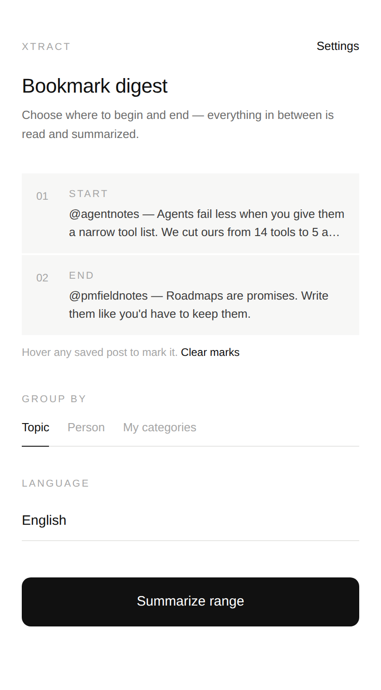
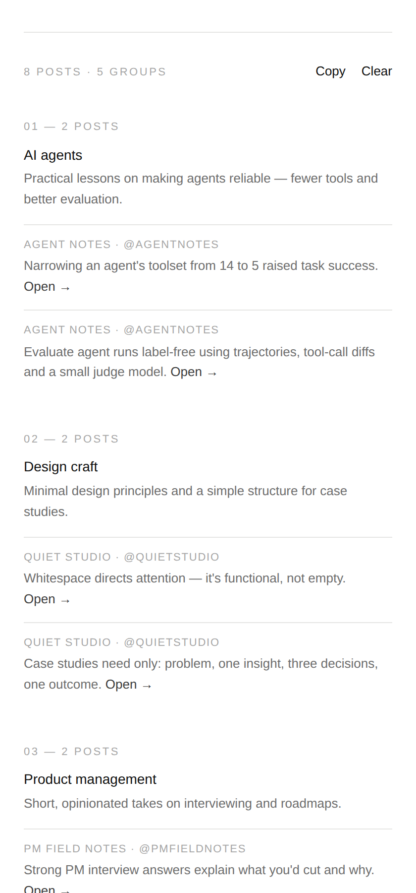
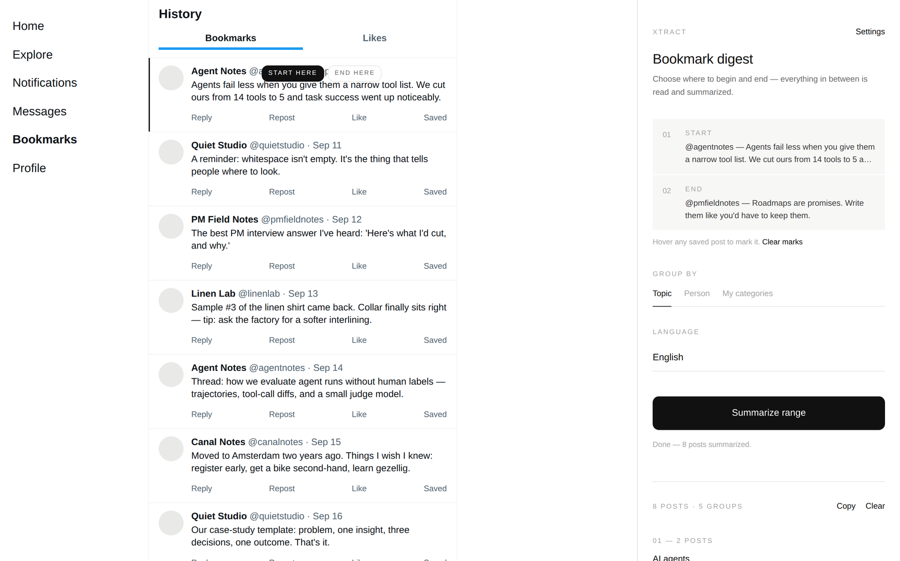

Xtract
For everything you saved on X and never went back to. Mark where to start and where to stop on your bookmarks, and Xtract writes one line for every post in between, grouped by topic, by person, or by categories you choose.

Mark a range
Hover any saved post and click Start here, then another and click End here.
It reads for you
Xtract goes back to your start post and scrolls down to the end at a human pace, collecting every post in between.
One line each
Claude writes one sentence per post: the idea, the tip or the resource, with a link back to the original.
Your grouping
By topic, by person, or by categories you type yourself. Each group gets a short line on what ties it together.
In your language
Summaries in English, 中文, or the language each post was written in. Copy the whole digest as Markdown.
Stays yours
Your own Anthropic key, kept in your browser. Only the posts' text goes to Claude, and nothing is sent anywhere else.

- Download Xtract and unzip it.
- Open
chrome://extensionsand switch on Developer mode. - Click Load unpacked and choose the
xtractfolder. - Pin Xtract, click it, and paste your Anthropic API key under Settings.
- Open your bookmarks on X, mark a start and an end, and click Summarize range.
Works in Chrome on desktop. Up to 300 posts per run. It reads the page the way you see it and paces its scrolling, without touching X's hidden APIs.
